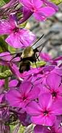

Observed August 18, 2026 · Pollinator
Hummingbird Moth
A clearwing-type hummingbird moth visiting the pink phlox. It hovers in front of flowers and uses its long proboscis to reach nectar, moving pollen as it travels from bloom to bloom.
A fast-moving daytime moth that can look remarkably like a tiny hummingbird.